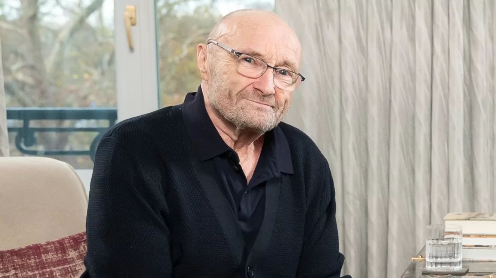

Acerca de
Philip David Charles Collins, más conocido artísticamente como Phil Collins, es un cantante, baterista, compositor, productor discográfico y actor británico. Fue nombrado teniente de la Real Orden Victoriana y es considerado como uno de los más grandes artistas en la historia de la música. Nació el 30 de enero de 1951 en Chiswick, Londres, Reino Unido.
Éxitos
- In the Air Tonight (1981)
- Another Day in Paradise (1989)
- Against All Odds (Take a Look at Me Now) (1984)
- One More Night (1985)
- Sussudio (1985)
- A Groovy Kind of Love (1988)
- Easy Lover (con Philip Bailey) (1984)
- Two Hearts (1988)
- I Wish It Would Rain Down (1989)
- Something Happened on the Way to Heaven (1990)